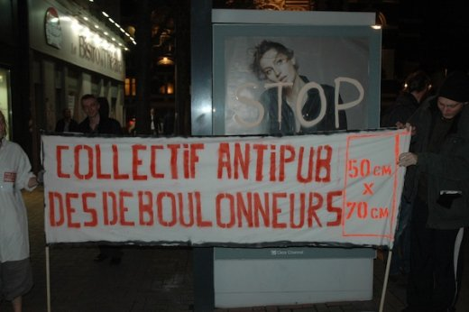
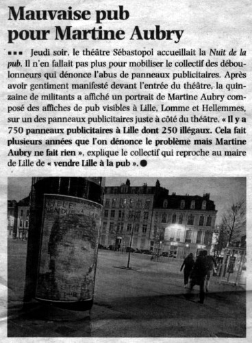
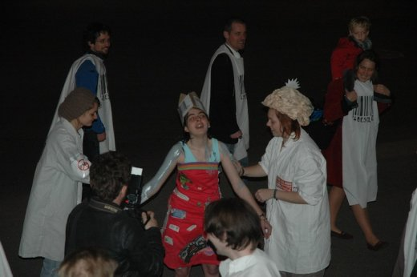

| |
Site dédié à la publication d'informations communiquées par le Collectif des déboulonneurs. En aucun cas ce site n'appelle à des actions illégales. | |
 |
||
|
Accueil du site > Lille > [Lille] Les Étoiles de la Pub ne nous font pas rêver
47e Action du Collectif des Déboulonneurs de LilleJeudi 22 Mars 2012
Heure de l’action : 19h-20h20 Lieu : Devant le théâtre Sébastopol Nombre de panneaux touchés : 1 colonne culturelle enrubannée et 1 aubette CBS barbouillée en fin d’action Slogans : "Stop pub", "Aliénation mentale" et "Ville vendue à la pub" sur le portrait-mosaïque de Mme Aubry Animations : Ronde d’esclaves lobotomisés tournant autour d’une "icone de la pub". L’icone (tout droit sortie de l’affiche de la soirée) a été recouverte de "matière grise". 3 chapeaux "cerveaux disponibles". Chansons interprétées : Petite histoire de la publicité et Stoppub Tractage : plus difficile que d’habitude face à ce public de publicitaires. Florilège des réactions : "mais la pub c’est de l’information, vous voulez pas être informés ?", "mais sans la pub, il n’y aurait pas de télévision !", "vous vous éclairez pas à la bougie chez vous quand même !", "je me rends bien compte que la pub c’est de la merde, mais ça fait 3 ans que j’étudie pour bosser dedans..." Nombre d’activistes : Une bonne trentaine. Les spectateurs entrant dans la salle au fur et à mesure, nous étions plus nombreux qu’eux Nombre approximatif de passants-spectateurs : la salle a une capacité de 1300 places. On espère qu’ils n’ont pas tout rempli ! mais plusieurs centaines de spectateurs quand même Nombre de journalistes présents : 1 de Nord-Eclair Attitude de la police : 3 véhicules de police "sécurisaient" une aubette devant le théâtre. Nous avons choisi de barbouiller celle située sur le trottoir d’en face. Une fois le barbouillage réalisé...ils sont partis. Le gros ventre (8mois 3/4) de la barbouilleuse les a peut-être impressionnés... Retombées presse :


Communiqué de Presse du 14 mars 2012
47è action de désobéissance civile des Déboulonneurs lillois, contre l’invasion publicitaire des villes et des campagnes Les Étoiles de la Pub ne nous font pas rêver Le jeudi 22 mars aura lieu la cinquième édition d’un concours de publicité : les Étoiles de la Pub. Les meilleures « créations artistiques » seront récompensées lors de cette soirée. Une publicité n’est pas une création artistique : sa raison d’être est de nous vendre un produit. Quel message peut bien se cacher derrière ce cerveau monté sur un corps féminin retouché ? Que même pour vendre des « idées », on a besoin d’utiliser un corps de femme ? Une majorité de français trouve la publicité trop présente. De façon symbolique, non-violente et assumée, des citoyens vont entrer en désobéissance civile. Les publiphiles trouvent la publicité amusante, nous la trouvons dangereuse. RDV le jeudi 22 mars, à 19h devant le théâtre Sébastopol Communiqué de Presse
|

|
Site utilisant SPIP - Hébergement Ouvaton
|